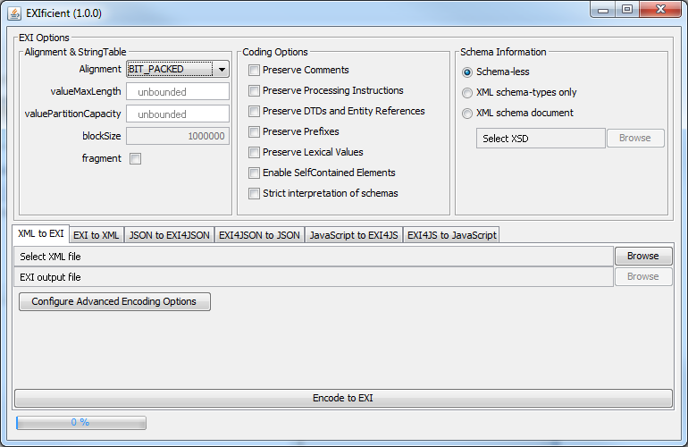

The EXIficient team currently works on the following Java projects.
The exificient library is the first project that the team started with. It offers a complete EXI implemantation including an XML schema parser to create EXI grammmars. Also it provides a Command-line Interface (CLI).
<dependency>
<groupId>com.siemens.ct.exi</groupId>
<artifactId>exificient</artifactId>
<version>0.9.5</version>
</dependency>
The exificient-gui project provides on top of the core library a Graphical User Interface (GUI).

Download a runnable JAR here.
The exificient-for-json project works on a relativley new topic which is about representing JSON data very efficiently in terms of message size and processing by means of EXI (see http://www.w3.org/XML/EXI/docs/json/exi-for-json.html).